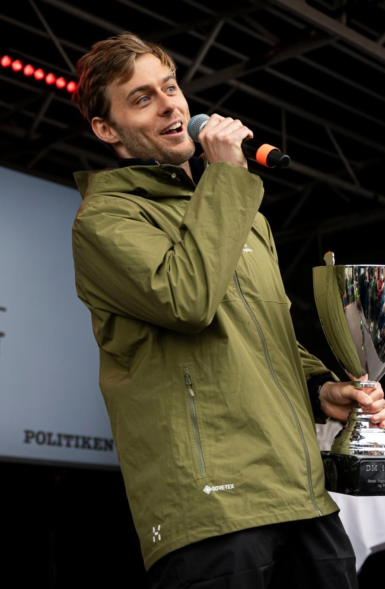

Månedens debatindlæg

»Vi udskammer unge mænd, der bare søger svar«
AfRasmus Jungersen EmborgVinder af DM i Debat 2026
»Gud døde med Nietzsche og genopstod med AI«
AfSimon Bødker
»Drømmen om eget hjem er blevet et fatamorgana«